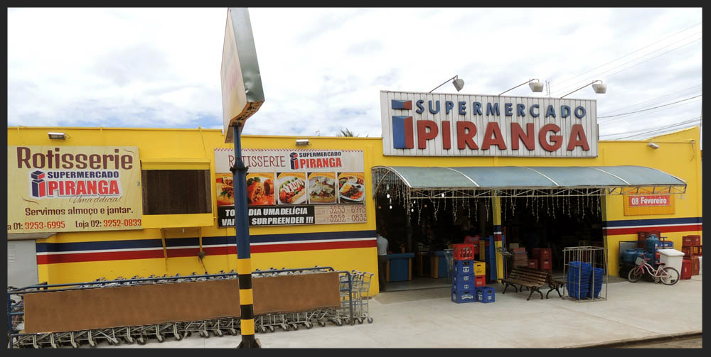

No ano de 1974 o casal Jose Aparecido Pariz Hernandes e Ana Maria Piacentin Hernandes ele nascido na cidade de Leme e ela nascido na cidade de Americana interior do Estado de São Paulo chegam à Taquaritinga para trabalhar como trabalhador rural na Fazenda Rincão Novo em Taquaritinga SP de propriedade do Dr. Carlos Nogueira Ferraz, constituindo neste local sua família com os 2 filhos Elaine Cristiane Pariz Hernandes e Edson Fernando Pariz Hernandes. Com o advento do crescimento urbano parte da Fazenda Rincão Novo ficou situada no Bairro Conjunto Residencial Ipiranga, um bairro predominantemente habitado por trabalhadores rurais e funcionários de Usinas de Cana de Açúcar, onde a maioria das casas pertenciam as Usinas de Cana de Açúcar da região. Este casal com vocação empreendedora, para poder complementar seu orçamento doméstico passa a cultivar verduras, legumes e também criar aves, suínos e gado de leite, vendendo aos moradores deste bairro vizinho os produtos cultivados na fazenda.  Em meados do ano de 1992 com a expansão de novos bairros como Vale Do Sol e Manoel Lopes Moreno, a demanda pelos produtos produzidos no moldes da agricultura familiar aumentaram demasiadamente, então que surge a oportunidade de adquirir um terreno em área comercial localizado na Avenida Heitor Alves Gomes no bairro Vale do Sol, onde com Jose Aparecido Pariz Hernandes juntamente com seu irmão o metalúrgico Mateus Pariz Hernandes morador da cidade de Araras SP tornam se sócios, constroem e fundão em um pequena terreno de 100 metros quadrados o Casa de Carne Irmãos Pariz , tendo como funcionários os próprios familiares.
Ser uma empresa de responsabilidade social, com ética, aperfeiçoando todos os processos e buscando possuir o menor ‘’custo de comercialização’’, transferindo ao consumidor todos os benefícios alcançados, garantindo assim a sua preferência e o crescimento constante da empresa.
Manter e ampliar o sentido de valor da empresa junto aos funcionários, aos fornecedores e ao mercado, sendo uma referência em responsabilidade social e de exemplo ético de atuação no varejo nacional.